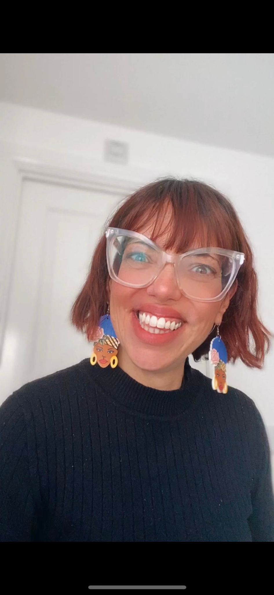

Cansada de tentar entender como funcionam os Reels?
Cansada de gastar muito tempo tentando alcançar sua audiência e recebendo muito pouco de volta?
A Masterclass Reels do Babado chegou pra te tirar do Limbo e te ajudar a finalmente entender como os Reels funcionam e como usar e abusar dessa ferramenta para engajar com sua audiência, vender seus produtos, atrair mais seguidores e principalmente se divertir durante todo o processo.
PRA QUEM É A MASTERCLASS REELS DO BABADO 2.0
Pra quem quer aprender como os Reels funcionam e se destacar no digital.
Pra quem nunca fez um Reel ou pra quem ainda não entende como a ferramenta funciona.
Pra quem quer se tornar social media.
Para você que quer aprender como engajar mais e trazer os seguidores certos para o seu perfil.
O QUE MINHAS ALUNAS ESTÃO DIZENDO...
Aqui vai ter os slides passando com os comentarios

Sua hostess nesse evento imperdível é uma multipotencial apaixonada pelo mundo criativo; curiosa, falante, ligada no 220V, com uma bagagem dentro do digital de mais de 10anos (sim, eu comecei quando a internet era discada).
Hoje trabalho como creative designer e sou responsável por tudo que engloba a criatividade dentro do digital. Edição de vídeos, edição de fotos, criação de conteúdo, engajamento, stories e obviamente a minha mais nova paixão REELS.
Com uma leveza no ensinar e muita calma no processo eu ensino alunas a alcançarem seus objetivos e sonhos, através da criatividade e do auto conhecimento.
Venha participar do meu grupo de Whatsppp, onde você terá acesso VIP ao link para a Masterclass, os bônus pré Masterclass e principalmente o super desconto de lançamento no dia do evento!!